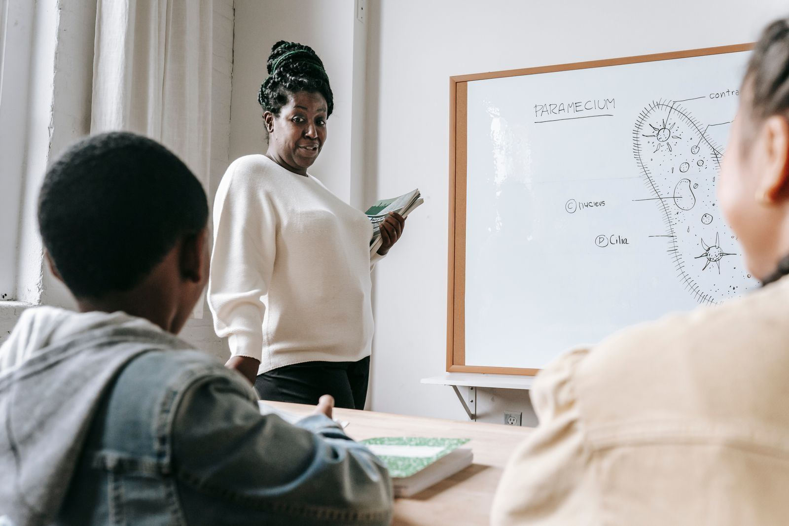

A co-educational, government-approved nursery, primary and secondary school opposite the University of Uyo Teaching Hospital, Abak Road.

About us
Pinnacle Schools provides high-quality nursery, primary and secondary education at affordable fees. Pupils learn in spacious classrooms equipped with state-of-the-art ICT, science and technology laboratories and other facilities.
Programmes
A caring start to school life.
Basic primary education with a strong foundation.
Junior and senior secondary, with laboratories for practical work.
Admissions
Call or email the school to ask about available places.
See the classrooms and facilities at Abak Road or Ewet Housing Estate.
The school office will guide you through the admission process.
Speak with the school office to arrange a visit.
Contact
Mkpong Street, off Ikot Ntuen Nsit Road, opposite UNIUYO Teaching Hospital, Abak Road, Uyo
8 Graceland School Road, off Gen. Edet Akpan Way, Ewet Housing Estate, Uyo